APC 技術ブログ
https://techblog.ap-com.co.jp/
株式会社エーピーコミュニケーションズの技術ブログです。
フィード

【Zscaler】Entra IDのSAML署名証明書を更新する｜ZIAへの反映から認証確認まで
APC 技術ブログ
Microsoft Entra IDとZIAをSAML連携している環境で、署名証明書を期限前に更新する手順を紹介します。新しい証明書の作成、ZIAへの登録・Activate、Entra IDでの切り替え、再認証による確認方法と切り戻しを解説します。
1日前
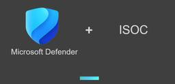
SIEM導入のハードルが下がる？Microsoft Defender ISOCを調べてみた
APC 技術ブログ
目次 目次 はじめに SIEM導入はなぜ重かったのか ISOCとは 提供条件 「手軽」の範囲を整理する コスト ISOCのセットアップ 前提条件 ワークスペースの作成 データコネクタの導入 ISOCで使える機能 ケース管理 ワークブック 自動化 Automatic Attack Disruption Content as Code Perceptionエージェント エージェントの一覧 標準のプレイブック 使い方と統制 制限 参考 Defender for Cloudのアラートとの関係 運用の進め方（筆者の見立て） 導入時の注意点 結びに ACS 事業部のご紹介 はじめに こんにちは。ACS事業…
2日前
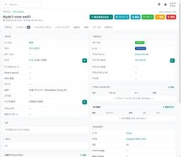
【NetBox連載 第1弾】NetBoxとは？ネットワーク管理の「Source of Truth」を解説
APC 技術ブログ
本シリーズについて: NetBoxを検討する方向けの連載の第1弾です。今後、有償版「NetBox Enterprise」、SaaS版「NetBox Cloud」、自動収集機能（Discovery / Assurance）の解説を順次公開予定です。 1. NetBoxとは 歴史と開発体制 2. なぜ「台帳」が問題になるのか 3. Source of Truth という考え方 4. NetBoxで管理できるもの（機能総覧） 4-1. 組織・設備（DCIM） 4-2. アドレス・ネットワーク（IPAM） 4-3. その他のコア機能 4-4. 拡張性 5. NetBoxが「やらないこと」 6. データ…
3日前

GitHub Copilot AppからAzureを操作する「Azure Canvases」を試してみる
APC 技術ブログ
目次 目次 はじめに Azure Canvasesとは Azure Canvasesで利用できる機能 Azure Resources Query Azure Resources Queryを使ってみる 1. Azure CLIを準備する 2. GitHub Copilot AppからPluginをインストールする 3. Azureリソースを検索する Azure Cost Health Check Azure Cost Health Checkを使ってみる Azure Functions Hosted Skills Canvas Hosted Skills Canvasを使ってみる Azure …
4日前

WSLでもデバイスコードに逃げない：ブラウザ経由で az login する方法（GitHub Copilot CLI の MCP認可にも）
APC 技術ブログ
目次 目次 はじめに なぜWSLでブラウザが開かないのか WSL上でブラウザ経由でAzure CLIにログインする BROWSER環境変数にwslviewを設定する xdg-openをwslviewへのシンボリックリンクにする az loginを実行する 補足：GitHub Copilot CLIでMCPのOAuth認可をする まとめ ACS 事業部のご紹介 はじめに こんにちは。ACS事業部の折田です。 WSL上で az login を実行してもブラウザが開かず、「それならデバイスコードで認証しよう」と az login --use-device-code に切り替えてしまった経験はないでし…
5日前


【OCI認定】無償で受験できるOCI資格を全て取得してみた
 1
1
APC 技術ブログ
OCI はじめに こんにちは、クラウド事業部の伊藤です！ 弊社には資格取得制度として、受験料負担やインセンティブ支給でスキルアップを支援する制度があります。 制度は制度としてありつつ、過去には5か月間で100名以上が「OCI Architect Associate」を取得していたり、スキルアップが文化として根付いているのが普通に凄いなと感じてる今日この頃です。 www.ap-com.co.jp そんな先人に倣って、今日は無償で受験できるOCI資格を全て取得してみたので、本記事では取得した資格の特徴や受験した感想をまとめます。 OCIの受験履歴 はじめに 無償受験できるOCI認定資格 申込み方法…
6日前
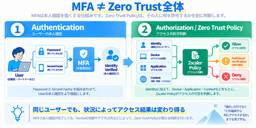
Chapter 4｜第50回 MFAとZero Trustはどう組み合わせて考える？
APC 技術ブログ
「Zero Trustを進めるならMFAを入れればよい」 そう聞くことがあります。 MFA（Multi-Factor Authentication）は、Passwordだけに依存せず、複数の要素を使って本人確認を強化する重要なSecurity Controlです。 ただし、MFAを導入しただけでZero Trustが完成するわけではありません。 Zero Trustでは、User IdentityだけでなくDevice、Access先Application、Networkや状況などのContextを見ながら、必要なAccessだけを許可することが重要です。 Chapter 4の最後として、MF…
7日前
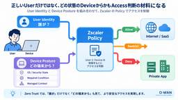
Chapter 4｜第49回 Device Postureって何？「誰」だけでなく「どの端末」も見る理由
APC 技術ブログ
正しいUser IDとPasswordでLoginできたなら、そのUserからのAccessはすべて同じように扱ってよいのでしょうか。 たとえば同じ社員でも、 会社が管理しているPC OS Updateが長期間止まっているPC 個人所有のDevice では、Security上の状態やOrganizationが把握できる範囲が異なります。 そこでZero Trustでは「誰がAccessしているか」に加えて、 「どのような状態のDeviceからAccessしているか」 も判断材料にできます。 ZscalerでこのDevice状態をPolicyへつなぐ考え方がDevice Postureです。 ま…
7日前
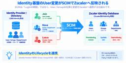
Chapter 4｜第48回 SCIMって何？ユーザーやグループ情報を連携する仕組み
APC 技術ブログ
SAMLを使えば、UserがAccessしたときに「この人は誰か」というAuthentication結果をZscalerへ伝えられます。 では、UserがまだZscalerへLoginしていないときに、 「このUserは営業部Groupに所属している」 「このUserは退職して無効になった」 といったIdentity情報をZscaler側へ反映したい場合はどうするのでしょうか。 そこで登場するのがSCIM（System for Cross-domain Identity Management）です。 SCIMは、UserやGroupなどのIdentity情報をService間でProvisio…
7日前
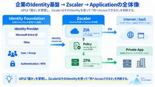
Chapter 4｜第47回 Entra IDやOktaはZscalerとどう関わる？
APC 技術ブログ
Microsoft Entra IDやOktaは、Zscalerの話で頻繁に登場します。 これらはZscalerの「中にある認証機能」ではありません。 Entra IDやOktaは、企業がUser AccountやAuthenticationを管理するIdentity Provider（IdP）としてZscalerと連携します。 Zscalerは、そのIdentity基盤が持つ「誰か」「どのGroupか」といった情報をSecurityやApplication Accessの判断へ利用します。 今回は製品ごとの設定方法ではなく、企業のIdentity基盤とZscalerをなぜ組み合わせるのかを整…
7日前
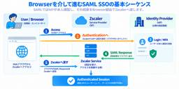
Chapter 4｜第46回 SAMLって何？ZscalerとIdPの間で起きていること
APC 技術ブログ
前回は、Zscalerが企業のIdentity Provider（IdP）と連携し、「誰が利用しているのか」を確認すると説明しました。 では、IdPでAuthenticationに成功したという結果は、どうやってZscalerへ伝わるのでしょうか。 そこで登場する代表的な仕組みがSAML（Security Assertion Markup Language）です。 SAMLという名前を見ると、XMLやCertificateなど難しい話を想像しがちです。 この回で覚えたいのは細かな書式ではありません。 「本人確認はIdPが行い、その結果をServiceへ安全に受け渡すための標準的な仕組み」 とい…
7日前
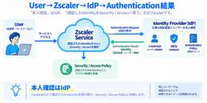
Chapter 4｜第45回 Zscalerはどうやってユーザーを認証する？
APC 技術ブログ
Zero Trustでは、「どこから接続したか」だけでなく、 「誰がAccessしようとしているのか」 を確認することが重要です。 ではZscalerは、UserのIDやPasswordを自分だけで確認しているのでしょうか。 実際には、企業がすでに利用しているIdentity Provider（IdP）と連携し、User Authenticationを行う構成が一般的です。 Microsoft Entra IDやOktaなどのIdPがUserを認証し、その結果をZscalerへ伝えることで、Zscalerは「誰のTraffic / Accessか」をPolicyへ結び付けられます。 今回はSA…
7日前
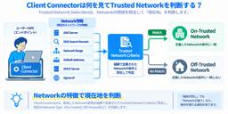
Chapter 4｜第44回 Trusted Networkって何？場所によって動作を変える理由
APC 技術ブログ
「Trusted Network」と聞くと、 “安全だと信頼しているNetworkだから、Security Checkを減らす仕組み” のように聞こえるかもしれません。 しかし、Client ConnectorでのTrusted Networkは、もっと実務的な意味を持ちます。 Organizationがあらかじめ定義したNetwork情報と、現在PCが接続しているNetwork情報を照合し、 「この端末はいま、Organizationが指定したNetworkにいるか」 を判定するための仕組みです。 その結果をForwarding Profileへ渡すことで、OfficeとRemoteなど、N…
7日前
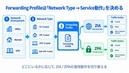
Chapter 4｜第43回 Forwarding Profileって何？通信の行き先を決める考え方
APC 技術ブログ
Client Connectorは、PCがどこにいても同じ動きをするとは限りません。 Officeにいるとき、自宅にいるとき、企業VPNへ接続しているときでは、Networkの構成や既存のSecurity経路が違うことがあります。 そのため、 「今のNetworkでは、ZIA / ZPAのTrafficをどう扱うか」 を切り替える考え方が必要になります。 その役割を持つのがForwarding Profileです。 今回はTunnelの設定値や管理画面ではなく、Forwarding Profileがなぜ必要で、何を判断しているのかを整理します。 まず結論。Forwarding Profileは…
7日前
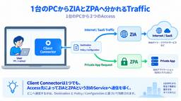
Chapter 4｜第42回 ZIAとZPAの通信をClient Connectorはどう使い分ける？
APC 技術ブログ
同じPCのClient Connectorから、Internet / SaaSはZIA、Private AppはZPAへつながります。 ではClient Connectorは、どうやってこの2つを使い分けているのでしょうか。 「InternetならZIA、社内ならZPA」と覚えるだけでは、少し足りません。 実際には、通信先がZPAで定義されたApplicationか、ZIAへ転送する対象Trafficかを、Organizationの設定やPolicyに基づいて判断します。 今回は、一台のPCの中でZIAとZPAへのTrafficがどのように分かれるのかを整理します。 まず結論。1つのClien…
7日前
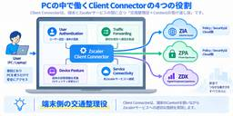
Chapter 4｜第41回 Client ConnectorはPCの中で何をしている？
APC 技術ブログ
PCのタスクトレイに常駐しているZscaler Client Connector。 普段はほとんど意識しないため、「VPNクライアントのように通信をつなぐだけのアプリ？」と思われることがあります。 しかし実際には、Client Connectorは端末とZscalerサービスをつなぐ接点として、認証、通信転送、端末情報の確認など複数の役割を担います。 Chapter 4では、このClient ConnectorとIdentityの関係を詳しく見ていきます。 まず今回は、PCの中でClient Connectorが何をしているのかを全体像から整理します。 まず結論。Client Connecto…
7日前

『新卒に講師なんて務まるのか？』と萎縮した私が、ハッカソン現場で学んだ5つのプロ意識
APC 技術ブログ
目次 目次 1. はじめに イベント概要 2. 初講師のリアル：事前準備から当日の壁まで 事前準備：「分かったつもり」になっていた自分 当日直面した「技術力への気後れ」と焦り 3. 現場での意識の切り替え 4. 振り返りで見えた「講師の役割」 事後振り返りで整理できた点 講師という役割の再定義 5. 過去の自分に捧げる「5つのノウハウ」 ①【準備編】期待値のすり合わせとロープレによって、当日の動きを明確にする ②【危機管理編】SOSは「詰まった瞬間」ではなく「問題になりそうな兆候」で上げる ③【ファシリテーション編】講師の仕事は「コンテンツの消化」ではなく「場の空気づくり」 ④【マインド編】「…
8日前
Platform Engineeringを支える「意図・ガードレール・測定」【Platform Engineering Kaigi 2026 参加レポート】
APC 技術ブログ
はじめに 開発を速くしても、なぜ成果につながらないのか 使われているか分からない…「本当の価値」はどう測る？ ゴールデンパスに必要なのは「ガイド・権限・相談先」 AIが作ったPRの山に埋もれないための工夫 安全に試せる仕組みと、長く使える基盤づくり PEK2026の実践をMicrosoftの未来予測と照らす おわりに はじめに こんにちは、ACS事業部の小原です。 先日、中野セントラルパークカンファレンスで開催された Platform Engineering Kaigi 2026（PEK2026）に参加してきました。 今年のテーマは、公式ページでも掲げられている「AI Native Platf…
9日前
ノーコードで自動化に挑戦！Google Workspace Studioで企業300社を調査してみた感想
APC 技術ブログ
※本記事は、筆者が実際に Google Workspace Studio を使用して検証・構築を行う中で感じた所感や、リアルな体験談をまとめたものです。 はじめに Workspace Studioとは？ 今回のタスク：300社分の企業情報自動抽出 実現したかった処理 ワークフロー設計：シート更新トリガーによる順次処理 実際に構築したフロー 実際やってみてわかった3つのハマりポイント 1. 「Gemに相談」と「Geminiに相談」の精度差 2. エラーログが出ない問題 3. 抽出フローにおけるカスタムコンテンツ名の命名規則 実行結果と成果 おわりに はじめに こんにちは！2026年度新卒で入社い…
9日前
基礎から理解するMicrosoft Foundry①～概要編～
APC 技術ブログ
目次 目次 はじめに 1. Microsoft Foundryとは？ 2. Microsoft Foundryを構成するコンポーネント Foundry Resource Project Models Agent Prompt Agent Voice-based Prompt Agent Hosted Agent Tools / Toolbox Knowledge / Foundry IQ Evaluation Monitoring Tracingとの関係 3. Microsoft Foundryの強みとは？ Microsoft FoundryとCopilot Studio Microsoft …
10日前
【GAS+Geminiで実現】 Googleカレンダーの定例会議を「毎週〇曜だけ一括不参加」にしてみた
APC 技術ブログ
本ブログでは、アプリ開発未経験者でも「Googleカレンダーで曜日ごとに一括欠席登録する機能」をGeminiとGASを使うと簡単に実装できたので、 やったことや所感をアウトプットします。
11日前
MCP 2026-07-28の認可仕様に、Entra IDはどこまで応えているのか
APC 技術ブログ
目次 目次 はじめに MCP 2026-07-28での認可関連の変更点(おさらい) 1. PRM (RFC 9728) → API Managementでの記述方法 2. Resource Indicators (RFC 8707) → Entra ID独自仕様による相互運用性の問題 Claude Codeで実際に起きる失敗: 板挟みの構造 現状の現実的な回避策: Azure CLIでトークンを取得する 3. DCR非推奨化とCIMD → Entra IDでの対応状況 SSRFリスク DDoS増幅リスク 自己申告メタデータへの不信 ガバナンス・可視性の喪失 まとめ ACS 事業部のご紹介 はじ…
11日前
Zenith Live '26 Tokyo: 新卒が視た0-WANの信頼と熱量
APC 技術ブログ
はじめに 【0-WAN（ゼロワン）とは？】 【Zenith Liveとは】 1. 【参加前夜】「ワクワクと不安」〜新卒1年目のリアルな心境〜 【前日の裏話】 2. 【イベント当日】会場の熱気とふと見えた「裏側」のプロフェッショナルたち 3. 【大きな気づき】「ただの技術イベント」のイメージが覆った瞬間 4. 【おわりに】0-WANだからこそ見えた景色 はじめに こんにちは、2026年度新卒で入社いたしました0-WANの柴田です。 本記事は、クラウドネイティブなゼロトラストプラットフォームを提供するZscalerが 世界各地で展開するグローバルイベントの日本版である「Zenith Live '2…
11日前
【Wiz】アラートに埋もれないクラウドセキュリティへ。APCがWizを選んだ理由
APC 技術ブログ
【Wiz】アラートに埋もれないクラウドセキュリティへ。APCがWizを選んだ理由 【Wiz】アラートに埋もれないクラウドセキュリティへ。APCがWizを選んだ理由 はじめに 対象読者 この記事で説明すること／しないこと 説明すること 説明しないこと APCがWizを扱うようになったきっかけ なぜ今、クラウドセキュリティの見直しが必要なのか 攻撃にAIが使われる時代は、すでに始まっている GPT-4が攻撃に使われた事例 Claude Mythos 5の安全性評価で確認された逸脱事例 「ちょっとした設定ミス」が致命傷になる時代 2つのリスクが交わるとき 企業が直面する3つの課題 1. 個別ツールの…
11日前
【Zscaler】Cloud NSSとMicrosoft Sentinel連携のシークレットを更新する｜期限切れ前の定期更新手順
APC 技術ブログ
Zscaler Cloud NSSとMicrosoft Sentinelの連携で使用するクライアントシークレットを、期限切れ前に更新する手順を解説します。新しいシークレットの追加・切り替えから、サインインログによる認証確認、旧シークレットの削除、ログ受信確認まで、検証画面付きで紹介します。
12日前
【Zscaler】Cloud NSSでZIAのWebログをMicrosoft Sentinelへ連携する｜Azure環境の作成から受信確認まで
APC 技術ブログ
Zscaler Cloud NSSを使い、ZIAのWebログをMicrosoft Sentinelへ連携する手順を解説します。Azure側のリソース作成、Entra IDのアプリ登録、DCE・DCRの構成、Cloud NSSの設定からログ受信確認まで、検証画面とコマンド付きで紹介します。
12日前
Chapter 3｜第40回 ZPAで「社内アプリをInternetに公開しない」とはどういうこと？
APC 技術ブログ
ZPAの説明では、 「Private AppをInternetに公開しない」 「Applicationを見せない」 という表現がよく使われます。 ただ、この言葉だけでは少し曖昧です。 「DNSに名前が出ない」「Internetを使わない」「攻撃Riskがゼロになる」という意味ではありません。 ZPAで重要なのは、Private AppやApp ConnectorがInternet側から直接Inbound Connectionを受け付ける入口を前提にせず、内側からZPAへ接続するArchitectureです。 まず結論。「公開しない」とは、Appへ直接入るInternet側の入口を作らないこと …
13日前
Chapter 3｜第39回 なぜApp Connectorは複数台必要なの？可用性の基本
APC 技術ブログ
App Connectorは、ZPAとPrivate Appの間をつなぐApplication側の重要なComponentです。 第33回では、App ConnectorがPrivate Appへ到達できる場所に配置され、ZPA側へOutbound Connectionを作ることを説明しました。 では、そのApp Connectorが1台しかなく、その1台が停止したらどうなるでしょうか。 そのConnectorしかApplicationへ到達できない構成なら、User側やZPA Service Edgeが正常でも、Private Appへの接続経路が失われます。 そのためApp Connect…
13日前
Chapter 3｜第38回 Browser Accessって何？Client ConnectorなしでPrivate Appへつなぐ考え方
APC 技術ブログ
ZPAでは、端末上のZscaler Client ConnectorがPrivate AppへのTrafficをZPAへ導く方式があります。 では、取引先など自社管理外のDeviceへClient ConnectorをInstallできない場合はどうすればよいのでしょうか。 そのような場面の選択肢がBrowser Accessです。Web Browserを入口にZPAへAuthenticationし、許可されたPrivate Web ApplicationへAccessします。 まず結論。Browser Accessは「BrowserだけでPrivate Web Appへつなぐ」方式 一言でい…
13日前